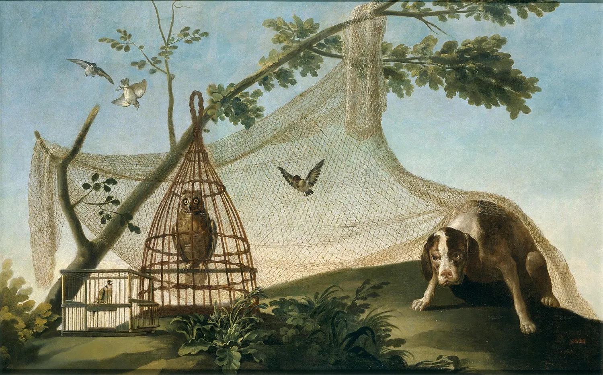

Goya to Martín Zapater · 6 September 1775
Letters from Goya · Chapter I Madrid and the Cartoons · Madrid

Listen to the first sentence (Spanish)
The letter and its translation
Me alegro que te diviertas y que visites a Francisco.
I'm glad you're enjoying yourself and that you visit Francisco.
Ya quedo enterado de todo lo que dices en cuanto a la obra, y será mejor que no se piense más: te doy gracias.
I've taken in everything you say about the work, and it will be better not to think about it any more. Thank you.
Y no tengo tiempo para más que decirte que aquí tengo el San Cristóbal y que al reverso te haré la Dolorosa, y manda a tu amigo de corazón.
And I've no time to tell you more than this: I have the Saint Christopher here, and on the back I'll paint you the Dolorosa. Your friend from the heart is yours to command.
Selected sentences from the letter. The translation is our own.
Goya came to Madrid in January 1775 and began painting cartoons for the Royal Tapestry Factory of Santa Bárbara: large oil paintings, the size of a wall hanging, that the weavers copied. His first cartoons were hunting scenes. He wrote this short letter to Martín in Zaragoza; the 1868 edition notes that the ‘Francisco’ of the letter was Bayeu.
In the app the letter arrives line by line like a message, with the meaning under each word, and you can talk with the writer. Chapter I is free.
Keep reading in the app · Google Play
Credits
- Picture: Francisco de Goya · La caza con reclamo · 1775 · Museo del Prado, Madrid · Public domain (PD-Art) · source
- Letter text: Zapater y Gómez, p. 8 · F. Zapater y Gómez, Goya. Noticias biográficas (Zaragoza, 1868 text; scan without imprint), p. 8 · public domain · archive.org
- Narration: made with Supertonic 3 (Supertone Inc.), model licence OpenRAIL-M.
- All sources: Lingua Museum sources and licences